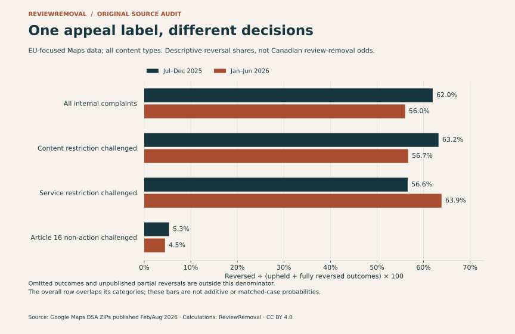
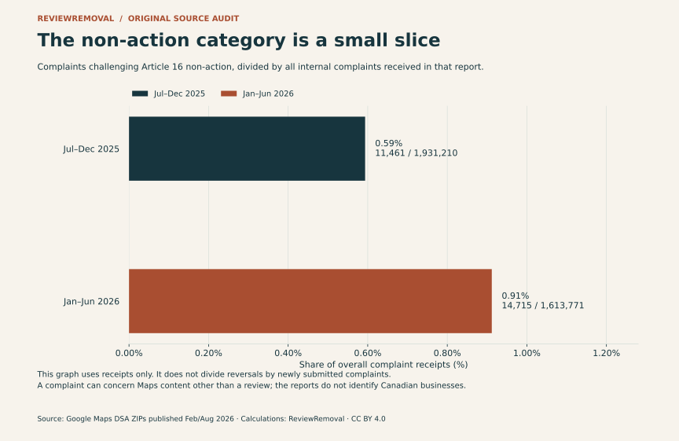
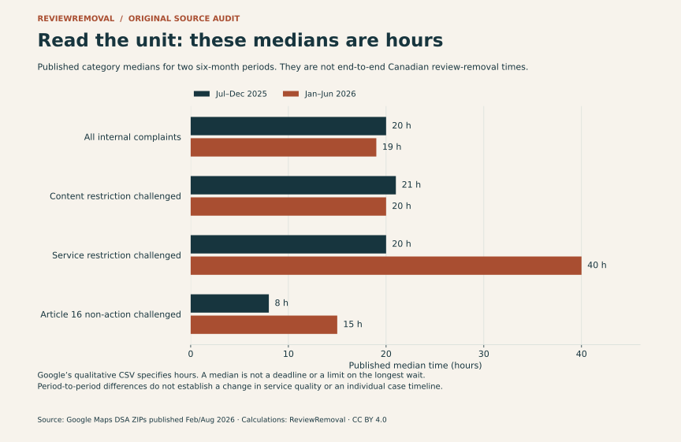

Published by ReviewRemoval. Authorship, sources and correction standards.
On this page
What percentage of Google review removal appeals succeed? Google’s latest Maps reporting tables cannot answer that question for a Canadian business. They can answer a more precise one: how often listed complaint outcomes were reversed, separated by the decision being challenged.
That distinction changes the reading substantially. For January–June 2026, we calculate 56.0% across the listed upheld-or-reversed Maps internal complaint outcomes overall. For the narrower category challenging non-action on an Article 16 notice, the corresponding share is 4.5%. These are different complaint groups, not competing estimates of a business owner’s odds. February 2026 Google Maps report (ZIP) · August 2026 Google Maps report (ZIP).
Findings in brief
- Direction matters. Challenging a restriction on your own content differs from challenging a decision that left reported content online.
- The narrower group is small. Google reported 14,715 Article 16 non-action complaints received in H1 2026, equivalent to 0.91% of overall internal complaint receipts.
- Read the unit. The two new-format reports specify median times in hours. Their figures are not promises for Canadian review reports.
- Our contribution is reproducible. The release preserves 74 source indicator cells, including 38 blanks, and supplies eight calculated category summaries, two contrasts and three original figures. It contains no newly observed individual reviews.
Our evidence comes from Google’s Maps-specific DSA ZIPs published February 27 and August 28, 2026, covering July–December 2025 and January–June 2026. The European Commission’s reporting catalogue links to Google’s disclosure centre and explains the switch to harmonised reporting. These are EU-focused disclosures with Google’s stated scope caveats; they are not Canadian service outcomes.
The two appeal directions people often combine
Before calculating an appeal rate, identify the original decision. In a content-restriction challenge, somebody disputes a removal, disabled access or visibility restriction. Reversing that decision can undo an existing restriction. In a non-action challenge, somebody disputes Google’s decision not to act on a previous notice. Reversing that decision points toward action rather than restoration. The same word—reversal—can therefore describe different directions.
Google’s separate help pages make that distinction tangible. Its contributor appeal guidance explains that content removed in error can be restored after an approved appeal. Its Business Profile reporting guidance describes a merchant’s one-time appeal when a flagged review has not qualified for removal. These processes concern different starting decisions. The DSA table’s Article 16 label should not be treated as an exact substitute for every merchant policy-report appeal.
This also explains why the aggregate is unsuitable for advertising a review-removal service. Maps hosts more than reviews, and its internal complaint totals include challenges to content and service restrictions. A reversal is not automatically the deletion of a negative business review. Our existing moderation statistics audit addresses a related problem with platform-wide removal counts; this study examines complaint direction and outcome denominators.
What the two outcome tables actually let us calculate
We use a deliberately narrow, visible denominator: reversed ÷ (upheld + fully reversed) × 100. It describes the share reversed among those two published outcome classes. It excludes omitted outcomes and does not assume blank partial-reversal fields are zero. It is not a completion rate, an error rate for all moderation decisions or a forecast for a new report.



| Complaint group | Period | Upheld | Fully reversed | Reversed / (upheld + reversed) |
|---|---|---|---|---|
| All internal complaints | Jul–Dec 2025 | 702,993 | 1,145,031 | 62.0% |
| Challenge to a content restriction | Jul–Dec 2025 | 624,527 | 1,073,230 | 63.2% |
| Challenge to a service restriction | Jul–Dec 2025 | 53,318 | 69,496 | 56.6% |
| Challenge to Article 16 non-action | Jul–Dec 2025 | 10,163 | 573 | 5.3% |
| All internal complaints | Jan–Jun 2026 | 688,781 | 877,807 | 56.0% |
| Challenge to a content restriction | Jan–Jun 2026 | 615,042 | 805,209 | 56.7% |
| Challenge to a service restriction | Jan–Jun 2026 | 39,510 | 69,796 | 63.9% |
| Challenge to Article 16 non-action | Jan–Jun 2026 | 13,381 | 626 | 4.5% |
Scroll sideways to see every column.
For the H1 2026 non-action group, the calculation is 626 ÷ (13,381 + 626) × 100 = 4.469…%. For the overall group it is 877,807 ÷ (688,781 + 877,807) × 100 = 56.033…%. The difference is 51.6 percentage points, calculated between distinct categories. It is not evidence that changing a form, buying a service or choosing a country changes a case’s probability by that amount.
The earlier period shows the same descriptive separation: 573 ÷ (10,163 + 573) gives 5.3% for non-action, while 1,145,031 ÷ (702,993 + 1,145,031) gives 62.0% overall. We do not pool the periods or claim a trend in review-removal success. Google warns that report comparisons can reflect service, usage and reporting changes.
Less than 1% of receipts in the narrower category
The non-action category accounts for 11,461 of 1,931,210 overall receipts in July–December 2025, and 14,715 of 1,613,771 in January–June 2026. Dividing within each reporting period gives 0.59% and 0.91%. That puts the aggregate appeal headline in context: this specific category represents a small share of the complaints received, while it addresses a different original decision.



Receipt counts and outcome counts are different measures. Google explains in its qualitative notes that some complaints received in a period are not decided in it, and some decisions concern complaints received earlier. Subtracting the two totals does not measure the pending queue. Likewise, dividing this period’s reversals by this period’s receipts does not create a matched-cohort success rate.
The source also lists newly imposed restrictions separately: 1,732 in the earlier period and 2,176 in the later one. We preserve those values in the indicator download but do not relabel them as reviews removed or equate them with the non-action reversals. The tables do not supply the case-level mapping needed to do that.
Hours, not days—and no promised removal deadline
There is a second easy-to-miss issue in the reporting format. Google’s qualitative notes state that “all median times are reported in hours.” Both 2026 releases use that unit. An unlabelled value of 20 should therefore be read as 20 hours in these tables, not 20 days. This unit statement belongs to these releases; it should not be applied retrospectively to unrelated historical reports.



| Complaint group | Jul–Dec 2025 | Jan–Jun 2026 |
|---|---|---|
| All internal complaints | 20 h | 19 h |
| Challenge to a content restriction | 21 h | 20 h |
| Challenge to a service restriction | 20 h | 40 h |
| Challenge to Article 16 non-action | 8 h | 15 h |
Scroll sideways to see every column.
A median gives no maximum wait and no time by which every case finishes. The service-restriction median moves from 20 to 40 hours while the overall median moves from 20 to 19; that does not mean a particular Canadian review report has become faster or slower. The periods may differ in case mix, volume and reporting practices. For an active Business Profile report, use its actual status and Google’s current reporting instructions, rather than treating an EU table as a deadline.
What a Canadian business can use from this research
The useful finding for a business in Toronto, Mississauga, Vancouver, Calgary, Edmonton, Ottawa or Montréal is a better decision process, not a borrowed European success percentage. Keep the listing, review, report and decision attached to the same case. A concrete sequence is:
- Identify the starting decision. Are you asking Google to assess a live review, appealing a refusal to remove it, or trying to understand why content disappeared? Those are different tasks.
- Record the exact status and date. Keep the review URL, listing URL and report reference. Distinguish a pending report from an evaluated report or an escalated appeal.
- Document the policy concern. Use specific facts and the relevant policy, rather than just a low star rating. A reviewer not appearing in your records is context to examine, not automatic proof of fabrication.
- Use the available appeal route. Google’s Business Profile guide describes a one-time appeal for eligible reviews. Avoid inventing an endless escalation process or promising a reversal.
- Verify the observed result. A submitted form is not a removal. Track the decision and whether the review is visible, with a check date. Keep unrelated locations and reviews separate.
Our evidence checker, report and appeal guide and evidence checklist help organise that information. Google’s report-status guidance also distinguishes removed content from content later restored, so a single disappearance is not evidence of permanent removal.
If you want assistance, send the public listing or review link through our assessment form. No Google password is needed for the initial assessment. We assess the policy concern and explain the scope before paid work; we cannot guarantee the platform’s decision. This article reports no ReviewRemoval client results.
How we built and checked the dataset
- Bound the sources. We selected two consecutive Maps-specific, new-format releases, published February 27 and August 28, 2026. The periods are July 1–December 31, 2025 and January 1–June 30, 2026. We excluded Ads, out-of-court disputes and repeated-offender sections.
- Preserve source cells. We extracted the internal complaints section of
7_appeals_and_recidivism.csv: 37 indicator rows per period. The 74-cell compilation includes 36 reported numbers and 38 blanks. A blank stays null; it does not become zero or evidence that a category cannot occur. - Keep provenance. Every extracted cell has a source ID and one-based CSV row. The input JSON records the source URL, ZIP and member SHA-256 fingerprints, publication dates and qualitative-note locations. The audit checks CSV cells against the companion XLSX worksheet independently.
- Calculate transparently. Four populated complaint groups per period produce eight category summaries. The overall-to-non-action share difference produces two separate contrasts. Source counts and our ratios have different field names and record types; the overall summary is not added to its component categories.
- Keep the units and scope. The qualitative notes specify hours and EU-focused reporting, with some broader-scope caveats. No Canadian split, review-only split, business-owner-only split or unique-review cohort is disclosed in these tables.
- Check reproduction. The independent audit reads the published source inputs, recalculates fractions, checks preserved blanks and checks the source archives when provided. The plotting script regenerates all figures from the same JSON.
Our methodological caution is consistent with, but not validated by, Trujillo, Tessa and Cresci’s May 2026 preprint on harmonised DSA reporting. Their study examines eight large social platforms and identifies reporting-quality and interoperability problems. It is context for checking schemas, units and coverage, not an independent replication of our Maps calculations or evidence about Canadian review outcomes.
Limits and interests: This is secondary descriptive research, not a random sample, a causal study or independent verification of Google’s internal reporting. We ran no removal experiment, scraped no customer reviews and used no private client records. We claim no external peer review. ReviewRemoval sells review-reporting assistance and has a commercial interest in the topic; the data do not establish the effectiveness of our service.
Download the dataset, figures and citation
- 74 attributed source indicator cells, including 38 preserved blanks · CSV column definitions.
- Eight category summaries with counts, denominators and calculated shares · CSV column definitions.
- Two descriptive category contrasts in percentage points · CSV column definitions.
- Complete release, provenance and limitations.
- Source inputs, row references and fingerprints.
- Dataset builder · Independent audit and source verification · Chart reproduction script.
- BibTeX · Citation File Format.
Run python build-google-maps-appeals.py, then python audit-google-maps-appeals.py, in the downloaded data directory. Add --fetch to the audit to download and fingerprint the two official ZIPs. Chart reproduction uses python plot-google-maps-appeals.py with Matplotlib installed. The original compilation, calculations and figures are licensed CC BY 4.0; Google and other source publishers retain rights in their material. Raw Google archives are linked, not republished.
Suggested citation
ReviewRemoval. (2026, November 2). Google Maps Appeals Direction Audit, July 2025–June 2026 (Version 1.0.0). Article and open dataset. Cite Google as the publisher of the underlying counts and ReviewRemoval for the compilation and calculations. Specify the complaint group and denominator when quoting a percentage.
Common questions about Google review removal appeals
Does the 56.0% figure mean my removal appeal has a 56% chance?
No. It is our calculated share of fully reversed outcomes among listed upheld-or-reversed outcomes across Maps internal complaint types in H1 2026. It includes different decisions and content types, is EU-focused and is not a new Canadian review-report cohort.
Is 4.5% the real Canadian review appeal success rate?
No. It describes a narrower EU Article 16 non-action category under the stated two-outcome denominator. The source does not isolate Canadian businesses, reviews alone or ordinary merchant policy appeals.
Does a reversal always remove a review?
No. Reversing a content restriction can restore content. Reversing non-action concerns a different original decision. The report does not map every complaint outcome to a particular review becoming hidden or visible.
Can a removed Google review return?
Yes. Google describes both approved contributor appeals that restore content and a report status for restored content. That supports tracking subsequent visibility; it does not quantify a return rate.
Do these median hours promise when my case will finish?
No. They are published medians for the defined reporting categories. They neither describe the slowest cases nor guarantee an initial report, appeal or final removal time in Canada.
Sources and exact locations
- Google Maps DSA report, published 2026-02-27 (ZIP). Data:
7_appeals_and_recidivism.csv, rows 2–38 including the header in the row count. Publication and coverage:1_report_identification.csv, rows 3–6. Definitions and timing:11_qualitative.csv, rows 15 and 18. The companion XLSX contains the same indicator worksheet. - Google Maps DSA report, published 2026-08-28 (ZIP). Data:
7_appeals_and_recidivism.csv, rows 2–38 including the header in the row count. Publication and coverage:1_report_identification.csv, rows 3–6. Definitions and timing:11_qualitative.csv, rows 15 and 18. The companion XLSX contains the same indicator worksheet. - European Commission: How the Digital Services Act enhances transparency online. Report catalogue and introduction of harmonised templates; accessed November 2, 2026.
- Google Business Profile: Report inappropriate reviews. Current merchant reporting, status and one-time appeal instructions; accessed November 2, 2026.
- Google Maps: Appeal user-generated content policy enforcement actions. Contributor content and feature-access appeals; accessed November 2, 2026.
- Google Maps: Report or Fix Content. Report-status meanings, including restored content; accessed November 2, 2026.
- Trujillo, A., Tessa, B., & Cresci, S. (2026). Disarranged Harmonization of Transparency Reporting by Social Media Platforms Under the Digital Services Act. arXiv:2605.17655v1, submitted May 17, 2026. Preprint; methodological context, not validation of this dataset.
Need help with a specific review?
Send the platform and the review link. We’ll assess the details and explain the price before paid work begins.
Request a Google review assessment